Migrate Vue 2 to Vue 3
with one command
vueleap scans your Vue 2 project and tells you exactly what breaks in Vue 3, file by file and line by line, with the official migration guide link, the @vue/compat flags you need and safe automatic fixes.
# run it once, nothing to install
npx vueleap
# or add it to the project
npm install --save-dev vueleap# run it once, nothing to install
pnpm dlx vueleap
# or add it to the project
pnpm add --save-dev vueleap# run it once, nothing to install
yarn dlx vueleap
# or add it to the project
yarn add --dev vueleap# run it once, nothing to install
bunx vueleap
# or add it to the project
bun add --dev vueleapScan the whole project
41 checks over templates, scripts, styles and package.json, with file, line and column.
Apply safe fixes
8 codemods that are provably safe, previewed as a diff before anything is written.
Get exact compat flags
The minimal configureCompat and compatConfig for the @vue/compat migration build.
Share an HTML report
One standalone file with filters, light and dark themes and links to the official guide.
Gate it in CI
Use --fail-on error and --json to stop Vue 2 only code from coming back.
Use the API
Call analyze() and fix() from Node.js to build your own migration tooling.

What does vueleap check?
Everything from the official Vue 3 migration guide that can be found statically: filters, $listeners, $scopedSlots, the $on/$off event bus, $set and $delete, new Vue() and the global API, Vue.extend, lifecycle and custom directive hook renames, v-model on components, .sync, .native, keyCode modifiers, functional components, inline-template, v-if with v-for, transition classes, render functions, and Vue 2 only dependencies such as vue-router 3, Vuex 3, BootstrapVue, Vuetify 2 and Element UI. See the full breaking changes checklist.
See a real report
This is the HTML report generated for a small sample Vue 2 shop: open the sample report. Generate yours with npx vueleap --html report.html.
Guides
Questions
How do I migrate from Vue 2 to Vue 3?
Run npx vueleap to list every breaking change, switch your build to Vue 3 with the @vue/compat migration build using the generated flags, fix the findings (starting with npx vueleap --fix --write), upgrade vue-router, Vuex and UI libraries, then remove the compat flags one by one.
Is vueleap safe to run on my code?
Yes. By default it only reads files. --fix prints a diff and writes nothing unless you add --write, and it never touches files outside the project folder.
Does it support TypeScript, script setup and class components?
Yes. Single file components with lang="ts", TSX, Vue 2.7 <script setup> and vue-property-decorator class components are analyzed. Pug templates are skipped with a warning.
Is Vue 2 still supported?
No. Vue 2 reached end of life on December 31, 2023 and no longer receives updates from the Vue team.